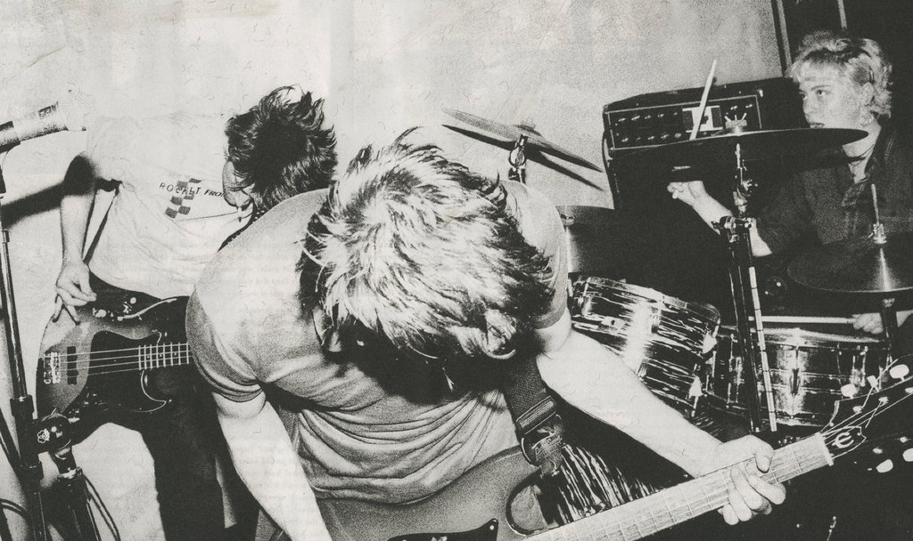

Bands I like

Here are some bands that I like:
- Fugazi
-
Formed in Washington, DC in September 1986 from the ashes of bands like Minor Threat, Embrace and Rites of
Spring. Their inventine, interlocking guitarwork often defies the traditional notion of "lead" and "rhythm"
guitars and features unusual and dissonant chords and progressions filtered through a hardcore punk lens.
Later, Fugazi more fully integrated elements of punk rock, hardcore, soul and noise with an inventively
syncopated rhythm section.
- Post-Hardcore
- Noise Rock
- Experimental Rock
- NoMeansNo
-
Critic Martin Popoff described their music as "the mightiest merger between the hateful aggression of punk
and the discipline of heavy metal." Their distinct hardcore punk sound, complex instrumentation, and dark,
"savagely intelligent" lyrics inspired subsequent musicians. They are often considered foundational in the
punk jazz and post-hardcore movements, and have been cited as a formative influence on the math rock and emo
genres.
- Hardcore Punk
- Post-Punk
- Punk Jazz
- Jawbreaker
-
American punk rock band that was active from 1986 to 1996, and again since 2017. The band is considered
to be extremely influential to the 1990s emo and punk genre with their "poetic take on hardcore. Many of
Schwarzenbach's lyrics were rooted in his specific concerns, often lifted directly from his journal. This
focus on personal, immediate matters, coupled with descriptive imagery and word choices, attracted listeners
to Schwarzenbach and made him a cult idol in rock and roll circles.
- Emo
- Alternative Rock
- Pop Punk